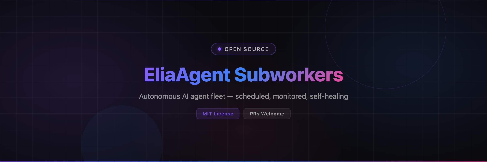

EliaAgent
A fleet of autonomous AI agents that runs your digital life 24/7.
SCHEDULED · MONITORED · SELF-HEALING · UNLIMITED TOKENS

A fleet of autonomous AI agents that runs your digital life 24/7.
SCHEDULED · MONITORED · SELF-HEALING · UNLIMITED TOKENS
One AI agent is an assistant. A fleet is an employee base. EliaAgent turns OpenCode into a self-managed fleet of autonomous subworkers — each with its own personality, workspace, schedule and memory — driven by a Python FastAPI server in Docker.
Every hour from 9h to 18h, weekdays only, weekends off, cron expressions — set it and forget it.
The Docker runtime isolates and contains OpenCode's known memory leaks that previously caused CPU/RAM blowups.
Provider outage mid-task? The server detects it, waits a randomized delay, nudges the same session with "continue the tasks" — work resumes where it stopped.
Crashed or timed-out runs retry automatically; session state survives full container nukes.
REST API + WebSocket events — live status, streaming logs, reasoning, tool calls.
Built-in Cloudflare Tunnel wizard — reach your fleet from anywhere, protected by a shared auth token.
Free OpenCode Zen models + rotating residential proxies = effectively unlimited autonomous work. Rotate IP, keep working — dead proxies are health-checked and skipped automatically.
Every session feeds a per-agent SQLite memory: decisions, bug fixes, discoveries. The next run loads relevant context automatically — 3,400+ sessions indexed across the production fleet.
refund-hunter has been hunting e-commerce refund policies
every day for months, writing reports to Google Docs and handing off state to its next shift —
without a single human prompt.
Two commands. Prerequisites, config, Docker image, opencode server, tmux UI — all handled.
git clone https://github.com/vakandi/EliaAgent.git cd EliaAgent/subworkers ./install_subworkers.sh # prerequisites + config + Docker image ./start_subworkers.sh # opencode server + Docker stack + UI in tmux
Health check:
curl http://localhost:5656/health
# {"status":"ok","timestamp":"...","uptime":...}
Then install a client to control the fleet:
The core skill of the system. Three files, zero code.
A workspace for isolated file I/O and a .enabled gate file — presence = active.
mkdir -p subworkers/<agent-id>/workspace touch subworkers/<agent-id>/.enabled
Write PROMPT.md — the task instructions injected on every run: workspace constraint,
handoff protocol (HANDOFF_NEXT_SESSION.md read at start, overwritten at end) and the mandatory
<promise>DONE</promise> completion marker the server uses to detect success.
Create ~/.config/opencode/agents/<agent-id>.md with YAML frontmatter — name, description,
model (opencode/big-pickle…), temperature, tool permissions. Below the frontmatter: persona, workflow, rules.
The host OpenCode server loads it at session creation.
Add an entry to subworkers/server/app/config/subworkers.json — hours, minute, days (cron convention:
[1,2,3,4,5] = weekdays only) or a cron expression. Max retries and timeout per agent.
The server hot-reloads the file — no restart needed:
curl -X POST http://localhost:5656/config/reload
📄 Deep dive: SUBWORKERS_SYSTEM.md — architecture, API contract, failure modes.
EliaTopBar / EliaAndroidApp / Electron UI ← realtime clients
│ WebSocket /ws + REST :5656
▼
┌────────────────────────────────────────────┐
│ elia-subworker-srv (Docker, FastAPI) │
│ ├── APScheduler ← subworkers.json │
│ ├── SubworkerRunner │
│ │ ├── provider-error auto-recovery │
│ │ ├── retries + exponential backoff │
│ │ └── HealthManager (auto-restart) │
│ └── SessionMonitor (2s polling) │
└──────────────┬─────────────────────────────┘
│ HTTP (host network)
▼
opencode serve :4096 (HOST process)
│
┌───────────┼───────────┐
▼ ▼ ▼
agent A agent B agent N ← personalities + PROMPT.md
workspace/ workspace/ workspace/ ← isolated file I/O
Run lifecycle:
APScheduler fires → isolated session created → PROMPT.md sent → agent works (streamed live over WS) →
completion = idle + <promise>DONE</promise> → transient errors auto-recovered →
failures retried with exponential backoff → alerts via macOS beep / ntfy.sh.
Auth: shared token via ELIA_AUTH_TOKEN — send as Authorization: Bearer <token>.
| Method | Path | Purpose |
|---|---|---|
| GET | /health | Server healthcheck |
| GET | /status | All subworkers {name, enabled, running, next_run, schedule} |
| PUT | /status/{name} | Edit config — schedule (hours/minute/days), model, variant, timeouts |
| POST | /trigger/{name} | Run now (optional {prompt, model} body) |
| POST | /enable/{name} · /disable/{name} | Toggle |
| GET | /logs/{name}?lines=N | Recent run-log lines |
| GET | /sessions/{name}?limit=N | Full session messages (reasoning, tools, text) |
| GET | /models | Model catalog (OpenCode Zen favorites first) |
| GET/POST | /main-agent | Read/set the MAIN agent |
| GET/POST | /server/health · /server/restart | OpenCode subprocess control |
| WS | /ws | Live events: initial_status, subworker_started, run_log, subworker_completed, subworker_error |
| Problem | Fix |
|---|---|
| Client shows Disconnected | Server URL must be http://localhost:5656 (not 8080) |
| Schedule didn't fire | Check entry in subworkers.json (enabled: true) then POST /config/reload |
| Container down | cd subworkers/server && docker-compose up -d --build |
| OpenCode server dead | POST /server/restart or restart via launcher |
| Auth errors (401) | Match ELIA_AUTH_TOKEN between server .env and client |
| Missed runs while laptop slept | Harmless — next slot fires when awake |